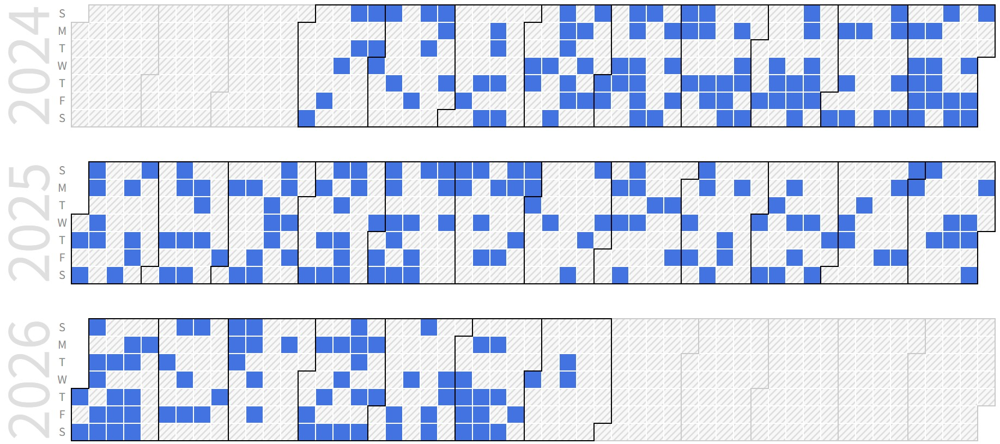

Hyunjung Lee (M.S. Graduate Student)
Master Graduate Student (M.S), Embedded System-on-Chip Integrator |
Repository Commit History
|
 |
Introduction
Full Bio Sketch
Mr. Lee received his B.S. degree in Electronics Engineering at Kyungpook National University, Daegu, Republic of Korea in 2024. He is currently pursuing toward his M.S. graduate degree in Electronics Engineering at Kyungpook National University, Daegu, Republic of Korea. His research interests cover automotive embedded systems, specially in designing multi-camera interoperable emulation framework using embedded edge-cloud AI computing for autonomous vehicle driving. He is pursuing his research to implement the entire full stacks from low-level embedded firmware to autonomous driving algorithm, including the hardware systems, by interoperating human-interative interfaces.
Research Topic
Vehicle-Controller-Interface Interoperation Emulation Framework
 Frames from four cameras connected to the Raspberry Pi are transmitted to the PC for streaming. On the PC, object detection is performed using yolo based on this streaming screen to determine the location of the object and the distance to the object. Using the identified information, the handling angle and speed for safe driving of the vehicle are appropriately set and transmitted to the Arduino board to ultimately control the vehicle. Additionally, the yoke steering wheel is linked to the PC to transmit the user's current handling angle information. In the process of processing information, control is basically based on the user's current handling angle, and if the angle differs by more than a certain amount from the handling angle for safe driving, not the current handling angle but the handling angle for safe driving is applied to control. Through this, it is possible to respond to various dangerous situations such as lane departure and obstacle collision that can occur when the driver cannot fully concentrate on driving. In driving situations, among the four cameras, information from the front camera is given the highest priority, and information from other cameras is used only in dangerous situations that have exceeded the threshold, allowing the driver to respond to emergency situations.
Frames from four cameras connected to the Raspberry Pi are transmitted to the PC for streaming. On the PC, object detection is performed using yolo based on this streaming screen to determine the location of the object and the distance to the object. Using the identified information, the handling angle and speed for safe driving of the vehicle are appropriately set and transmitted to the Arduino board to ultimately control the vehicle. Additionally, the yoke steering wheel is linked to the PC to transmit the user's current handling angle information. In the process of processing information, control is basically based on the user's current handling angle, and if the angle differs by more than a certain amount from the handling angle for safe driving, not the current handling angle but the handling angle for safe driving is applied to control. Through this, it is possible to respond to various dangerous situations such as lane departure and obstacle collision that can occur when the driver cannot fully concentrate on driving. In driving situations, among the four cameras, information from the front camera is given the highest priority, and information from other cameras is used only in dangerous situations that have exceeded the threshold, allowing the driver to respond to emergency situations.
The distance to an object is defined by converting the coordinates of an object detected in a two-dimensional plane into coordinates in a three-dimensional space based on camera calibration information and measuring the distance from the coordinates where the camera is located. In addition to this method, we are researching various methods of recognizing the distance to an object using a monocular camera, and plan to apply the optimal method.
Auto Parking Interoperation Emulation Framework
Additionally, in parking situations, the car is designed to recognize parking lines around the vehicle using four cameras and then automatically park along the optimal parking route by appropriately switching between drive mode and rear mode. The around view, as if looking at the vehicle from above, displays the vehicle when it is parked, allowing the driver to also understand the surrounding situation. Object detection in parking situations raises the standard for risk judgment higher than in driving situations, allowing parking to proceed while safely responding to situations such as when a vehicle or person suddenly passes by while parking.
3D Mapping
 Using a monocular camera, there is a limitation for applying the algorithms to various situation and reflecting an accurate environment surrounding a vehicle. Therefore, I used stereo camera calibration and stereo vision that can estimate distance from the objects with two cameras (left & right). For 3D mapping, a depth map that reflects the distance from the objects is needed. The depth map can be generated by some functions of the OpenCV, but the provided functions are not good at reflecting real-time. So, I aim to make an own depth map generation model. Each frame is revised to reflect the surrounding frames. By comparing the left and right frames, a depth map can be generated. To elaborate the own depth map, shadows must be removed. The shadows can be removed by mean shift filtering using edges of the screen. By image stitching, the depth maps streaming a front, left, rear and right can be merged so the 3D map that reflects surrounding the vehicle can be generated.
Using a monocular camera, there is a limitation for applying the algorithms to various situation and reflecting an accurate environment surrounding a vehicle. Therefore, I used stereo camera calibration and stereo vision that can estimate distance from the objects with two cameras (left & right). For 3D mapping, a depth map that reflects the distance from the objects is needed. The depth map can be generated by some functions of the OpenCV, but the provided functions are not good at reflecting real-time. So, I aim to make an own depth map generation model. Each frame is revised to reflect the surrounding frames. By comparing the left and right frames, a depth map can be generated. To elaborate the own depth map, shadows must be removed. The shadows can be removed by mean shift filtering using edges of the screen. By image stitching, the depth maps streaming a front, left, rear and right can be merged so the 3D map that reflects surrounding the vehicle can be generated.
Adaptive PID Controller
When autonomous driving, a vehicle can process data from sensing and make decisions to comfort and safe driving. However, this mechanism doesn’t assist or help direct control of the vehicle. Based on the data of surrounding environment, we can adjust the control sensitivity of the vehicle by maintaining the ratio of each gain of PID controller. Therefore, when driving or parking, the vehicle can reach the desired control speed rapidly or slowly than usual based on the spatial data of its own.
Multithreaded Automotive Controller
 Also, there are a lot of disturbances that can influence the real output of the automotive system. The disturbances make a difference between the desired speed and the real speed, and this can give the driver a sense of incongruity and discomfort. By multithreading, we can prepare an amplified signal, a normal signal, and an attenuated signal in parallel. These signals are applied immediately when the disturbance occurs, and it can reduce the difference and accelerate compensation for the disturbance immediately. Therefore, the drivers can experience comfort driving without any momentary discomfort or sense of incongruity.
Also, there are a lot of disturbances that can influence the real output of the automotive system. The disturbances make a difference between the desired speed and the real speed, and this can give the driver a sense of incongruity and discomfort. By multithreading, we can prepare an amplified signal, a normal signal, and an attenuated signal in parallel. These signals are applied immediately when the disturbance occurs, and it can reduce the difference and accelerate compensation for the disturbance immediately. Therefore, the drivers can experience comfort driving without any momentary discomfort or sense of incongruity.
Lightweight RL for Adaptive Super-Twisting Vehicle Control
 The conventional high-performance controller, the Super-Twisting Algorithm (STA), offers excellent stability but lacks the flexibility to adapt to ever-changing driving conditions. Using artificial intelligence like reinforcement learning to solve this is often too computationally intensive and inefficient for real-time operation on a vehicle's embedded computer. Our research proposes a new framework to resolve this dilemma, fusing a lightweight empirical reinforcement learning method that optimizes control parameters in real-time without complex calculations, with a hybrid sliding surface that adaptively blends control behaviors based on the situation.
The conventional high-performance controller, the Super-Twisting Algorithm (STA), offers excellent stability but lacks the flexibility to adapt to ever-changing driving conditions. Using artificial intelligence like reinforcement learning to solve this is often too computationally intensive and inefficient for real-time operation on a vehicle's embedded computer. Our research proposes a new framework to resolve this dilemma, fusing a lightweight empirical reinforcement learning method that optimizes control parameters in real-time without complex calculations, with a hybrid sliding surface that adaptively blends control behaviors based on the situation.
Through the synergy of these two technologies, the controller exhibits intelligent behavior, reacting quickly and aggressively to large errors while operating smoothly and stably when fine adjustments are needed. Consequently, we implemented an efficient control system that delivers both high performance and smooth responsiveness, making it practical for immediate application in real-world vehicle systems. Experiments have proven our framework to be a practical solution for achieving robust, energy-efficient control over a variety of driving conditions.
On-Chip Binary Code Compression and Runtime Uncompressed
 Modern embedded systems, particularly automotive MCUs, face significant memory limitations as software functionality becomes increasingly sophisticated. This research proposes a novel code compression technique that directly manipulates the final compiled output?the Intel HEX format?to overcome these physical hardware constraints. We are developing a custom compression algorithm optimized for the HEX format's structure and implementing an architecture where a bootloader, equipped with decompression logic, uncompresses and executes the application code from Flash memory in real-time at runtime.
Modern embedded systems, particularly automotive MCUs, face significant memory limitations as software functionality becomes increasingly sophisticated. This research proposes a novel code compression technique that directly manipulates the final compiled output?the Intel HEX format?to overcome these physical hardware constraints. We are developing a custom compression algorithm optimized for the HEX format's structure and implementing an architecture where a bootloader, equipped with decompression logic, uncompresses and executes the application code from Flash memory in real-time at runtime.
Through this approach, we aim to enable much larger software applications to run on existing hardware. A key validation task of this research is to analyze the trade-off between the benefits of memory savings and the performance overhead incurred by real-time decompression. To this end, we plan to use precision analysis equipment like TRACE32 to accurately measure changes in execution time, thereby proving the practicality and efficiency of our proposed technology.
Early Detection of Software-Induced Internal Margin Degradation in Automotive MCUs
 As SDV software becomes denser and more frequently updated, automotive MCUs can experience internal circuit stress even when no watchdog reset, diagnostic trouble code, or explicit timing violation is observed. This research proposes a lightweight on-chip diagnostic framework that uses resources already available in the Infineon AURIX TC375 MCU. ISR runtime is monitored as a software load indicator, while the statistical variability of on-chip ADC outputs is used as the primary indicator of analog margin degradation caused by software-induced internal stress.
As SDV software becomes denser and more frequently updated, automotive MCUs can experience internal circuit stress even when no watchdog reset, diagnostic trouble code, or explicit timing violation is observed. This research proposes a lightweight on-chip diagnostic framework that uses resources already available in the Infineon AURIX TC375 MCU. ISR runtime is monitored as a software load indicator, while the statistical variability of on-chip ADC outputs is used as the primary indicator of analog margin degradation caused by software-induced internal stress.
The framework defines a formal 3-sigma threshold to distinguish latent internal stress from nominal environmental noise. Experiments with computational load, interrupt jitter, resource contention, reduced ADC sampling margin, simultaneous switching noise, and external motor load show that interrupt latency and ADC mean values can remain stable while ADC variability selectively increases. This demonstrates that ADC variability can provide an early, sensorless warning of reliability margin degradation before functional failure, making the method practical for continuous in-field monitoring of automotive ECUs.
JSEC: Jitter-to-Step Execution Contracts for Reproducible Distributed ECU-in-the-Loop Co-Simulation
 Distributed ECU-in-the-Loop co-simulation is essential for validating SDV software with real ECUs and high-fidelity virtual plants, but network jitter can change when ECU control events are admitted into a fixed-step plant model. This research proposes JSEC, a Jitter-to-Step Execution Contract that treats admitted ECU events as a semantic execution stream. Instead of hiding jitter, JSEC maps measured admitted timing gaps into bounded fixed-step plant advancement so that repeated runs can be compared over the same admitted-event timeline while preserving hardware-timed ECU behavior.
JSEC is implemented on a distributed CARLA-Simulink-Infineon AURIX TC375 platform using a 14-DOF vehicle dynamics model. In a Town03 replay scenario, JSEC reaches a mean R2 of 0.947 and a mean correlation of 0.974 across repeated runs, compared with 0.410/0.782 for conventional asynchronous execution and 0.436/0.774 for JSEC without catch-up. The execution overhead remains small at about 0.79-1.14%, showing that an explicit jitter-to-step contract can substantially improve physical reproducibility in distributed automotive CPS validation.
Distributed ECU-in-the-Loop co-simulation is essential for validating SDV software with real ECUs and high-fidelity virtual plants, but network jitter can change when ECU control events are admitted into a fixed-step plant model. This research proposes JSEC, a Jitter-to-Step Execution Contract that treats admitted ECU events as a semantic execution stream. Instead of hiding jitter, JSEC maps measured admitted timing gaps into bounded fixed-step plant advancement so that repeated runs can be compared over the same admitted-event timeline while preserving hardware-timed ECU behavior.
JSEC is implemented on a distributed CARLA-Simulink-Infineon AURIX TC375 platform using a 14-DOF vehicle dynamics model. In a Town03 replay scenario, JSEC reaches a mean R2 of 0.947 and a mean correlation of 0.974 across repeated runs, compared with 0.410/0.782 for conventional asynchronous execution and 0.436/0.774 for JSEC without catch-up. The execution overhead remains small at about 0.79-1.14%, showing that an explicit jitter-to-step contract can substantially improve physical reproducibility in distributed automotive CPS validation.
Command-Authority Scheduling for Mixed-Criticality SDV Control
 As SDV control stacks move toward centralized, multicore, and service-oriented architectures, asynchronous low-criticality services can influence high-criticality actuator-command paths. This research proposes Command-Authority Scheduling (CAS), a bounded service-to-command allocation mechanism that converts low-criticality service outputs into role-constrained authority claims. CAS separates service-requested authority from the command influence actually realized at each command tick, using admission, age/confidence/budget factors, and command-domain-issued authority ceilings before final throttle, brake, and steering synthesis.
CAS is implemented on a TC375 FreeRTOS ECU-in-the-loop prototype connected to CARLA and evaluated across multiple traffic seeds and service-update settings. The results report zero observed authority-allocation violation rows, allocation of 44.3% of requested aggregate channel-token authority, and a maximum observed command-core execution time of 94 us, which is 0.94% of the 10 ms command period. These results show that CAS can bound low-criticality service influence and command-boundary work while still preserving useful service contribution in mixed-criticality SDV control.
As SDV control stacks move toward centralized, multicore, and service-oriented architectures, asynchronous low-criticality services can influence high-criticality actuator-command paths. This research proposes Command-Authority Scheduling (CAS), a bounded service-to-command allocation mechanism that converts low-criticality service outputs into role-constrained authority claims. CAS separates service-requested authority from the command influence actually realized at each command tick, using admission, age/confidence/budget factors, and command-domain-issued authority ceilings before final throttle, brake, and steering synthesis.
CAS is implemented on a TC375 FreeRTOS ECU-in-the-loop prototype connected to CARLA and evaluated across multiple traffic seeds and service-update settings. The results report zero observed authority-allocation violation rows, allocation of 44.3% of requested aggregate channel-token authority, and a maximum observed command-core execution time of 94 us, which is 0.94% of the 10 ms command period. These results show that CAS can bound low-criticality service influence and command-boundary work while still preserving useful service contribution in mixed-criticality SDV control.
Publications
Journal Publication (SCI 2, KCI 2)
Hyunjung Lee and Daejin Park. Auto Parking Assistant Control using Human-Activity Feedback-based Embedded Software Emulation (KCI) Journal of the Korea Institute of Information and Communication Engineering, 2024.
Hyunjung Lee and Daejin Park. Real-Time Lightweight Depth Map Estimation Using Stereo Vision and Convolutional Filtering (KCI) Journal of the Korea Institute of Information and Communication Engineering, 2025.
Hyunjung Lee and Daejin Park. Command-Authority Scheduling for Bounded Low-Criticality Service Influence in Mixed-Criticality SDV Control (SCI) (Under Review) IEEE Access, 2026.
Hyunjung Lee and Daejin Park. Double Blind Review (SCI) (Under Review) IEEE Transactions on Computer-Aided Design of Integrated Circuits and Systems (TCAD), 2026.
Conference Publications (Intl. 6)
Hyunjung Lee and Daejin Park. Multi-Camera Interoperable Emulation Framework using Embedded Edge-Cloud AI Computing for Autonomous Vehicle Driving In IEEE Vehicular Networking Conference (VNC), 2024.
Hyunjung Lee and Daejin Park. Convolution-Based Depth Map With Shadow Removal Using Cameras for 3D Mapping in Autonomous Vehicle Driving In IEEE International Symposium on Intelligent Signal Processing and Communication Systems (ISPACS 2024), 2024.
Hyunjung Lee and Daejin Park. Advanced Real-Time Performance QEMU Emulated Automotive Control System with a Multithreaded PID Controller In 2025 IEEE International Conference on Consumer Electronics - Taiwan (ICCE-TW), 2025.
Hyunjung Lee and Daejin Park. Lightweight Empirical Reinforcement Learning Driven Adaptive Super-Twisting Control with Fused Linear-Nonlinear Sliding Surfaces for Embedded Vehicle Control In IEEE 51th Annual Conference of the IEEE Industrial Electronics Society (Flagship Conf. IECON 2025), 2025.
Hyunjung Lee and Daejin Park. Architecture-Aware Neural Compression for TriCore Firmware using Knowledge Distillation In IEEE International Conference on Artificial Intelligence in Information and Communication (ICAIIC 2026), 2026.
Hyunjung Lee and Daejin Park. Early Detection of Software-Induced Internal Margin Degradation in Automotive MCUs Using On-Chip ADC Variability In IEEE International Symposium on the Physical and Failure Analysis of Integrated Circuits (IPFA 2026), 2026.
Hyunjung Lee and Daejin Park. Double Blind Review In IEEE ESWEEKS’ International Conference on Embedded Software (EMSOFT 2026), 2026.
Participation in International Conference
IEEE VNC 2024, Kobe, Japan
IEEE ISPACS 2024, Taipei, Taiwan
Automotive World 2025, Tokyo, Japan
IEEE ICCE-TW 2025, Kaosiung, Taiwan
IEEE IECON 2025, Madrid, Spain
IEEE ICAIIC 2025, Tokyo, Japan
IEEE IPFA 2026, Singapore, Singapore
IEEE EMSOFT 2026, Barcelona, Spain
Last Updated, 2026.07.13